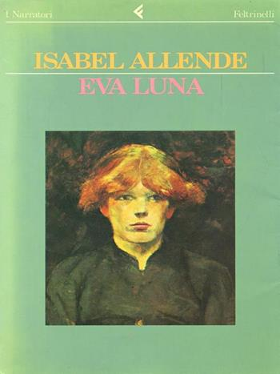

Eva Luna
Eva Luna è un romanzo di Isabel Allende, pubblicato nel 1987. In Italia il romanzo è apparso nel 1988, nella traduzione di Angelo Morino. Fonte
Catalogazione ICCU
OPAC SBN| Livello bibliografico | Monografia |
| Tipo documento | Testo |
| Autore principale | Allende, Isabel |
| Titolo | Eva Luna /Isabel Allende |
| Edizione | 8. ed |
| Pubblicazione | Milano : Feltrinelli, 1996 |
| Descrizione fisica | 267 p. ; 22 cm. |
| Collezione | Narratori |
| Numeri | [ISBN] :88-07-01357-6 |
| Note generali | Trad. di Angelo Marino |
| Titolo dell'opera | Eva Luna |
| Nomi | Allende, Isabel Scheda di autorità, VIAF, Morino, Angelo Scheda di autorità, VIAF |
| Classificazione Dewey | 863(19.) NARRATIVA SPAGNOLA |
| Lingua di pubblicazione | Italiano |
| Lingua dell'opera originale | Spagnolo |
| Paese di pubblicazione | Italia |
| Codice identificativo | IT\ICCU\CAG\0052952 |
Catalogazione Fondo Tondelli
| Inventario | 400100 |
| Collocazione | CDT BP 1.6.39 |
| Autore | Allende Isabel |
| Editore | Feltrinelli |
| Traduttore | Angelo Morino |
| Data di edizione | 1988, aprile |
| Pagine | 266 |
| Soggetto | Narrativa moderna e contemporanea |
| Qualificatore geografico | Cile |
| Qualificatore linguistico | Spagnolo latino-americano |
| Indicazioni manoscritte | No |